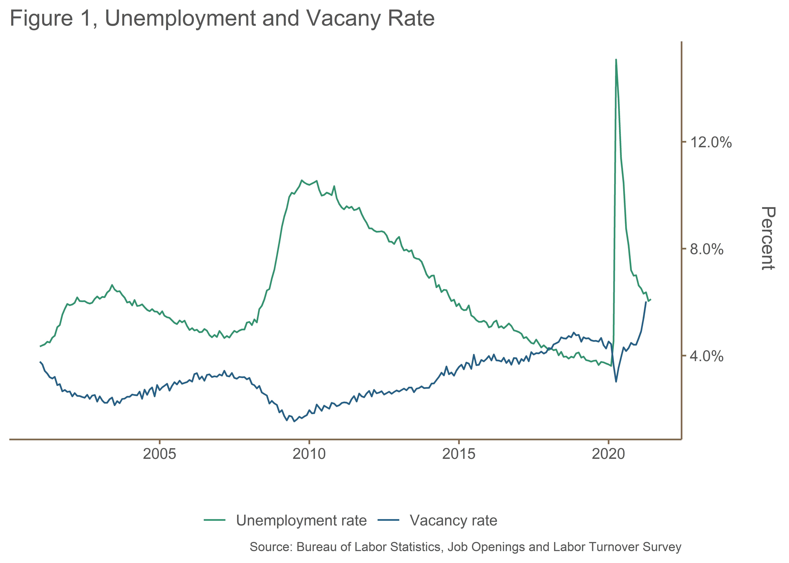
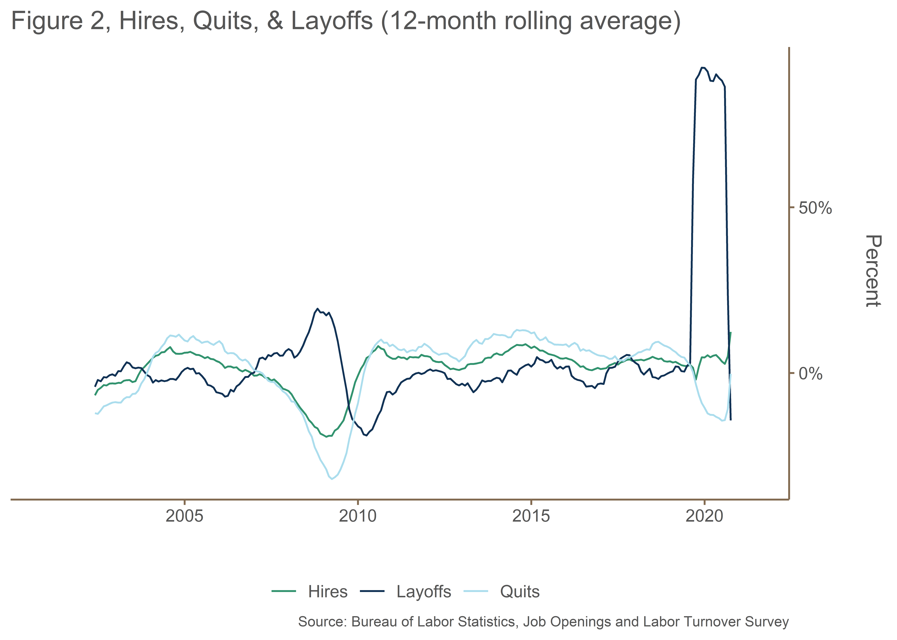
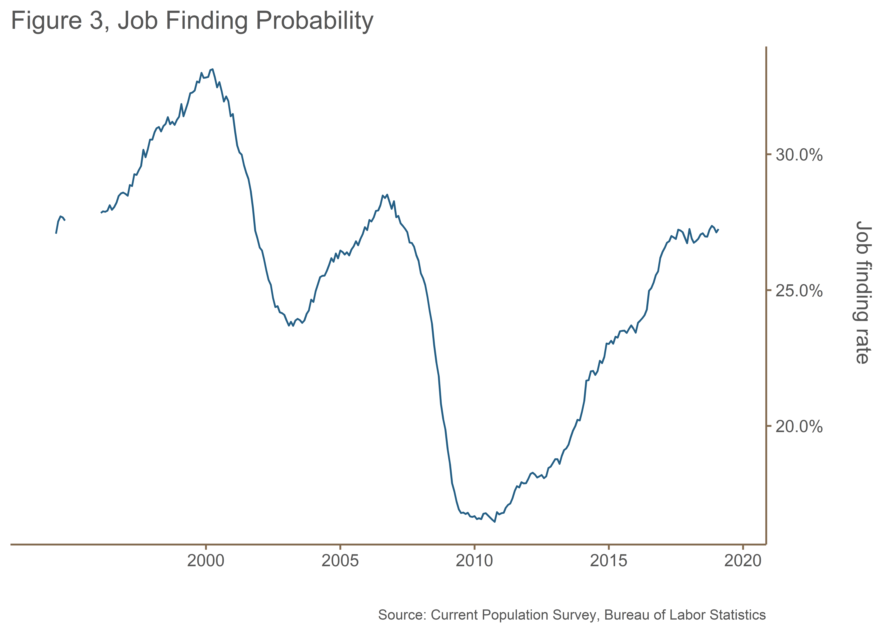
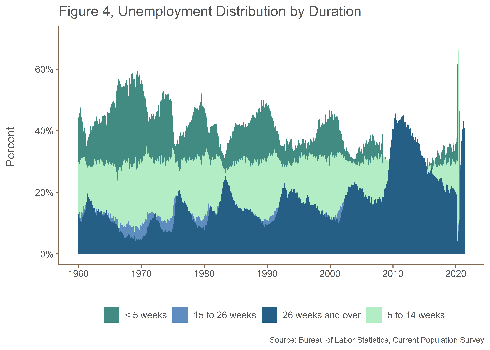
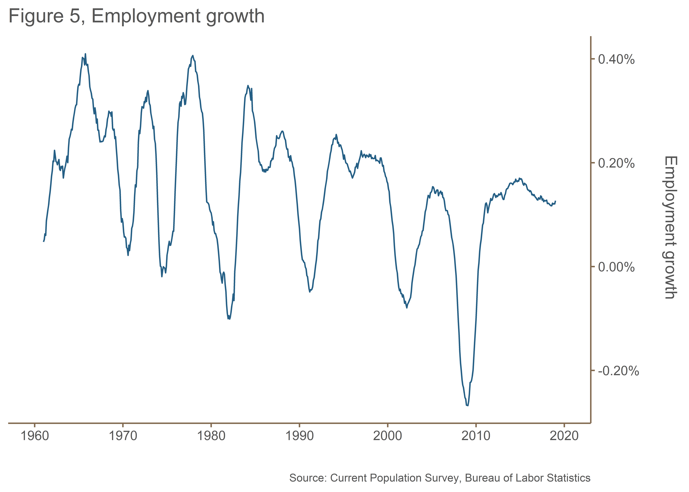
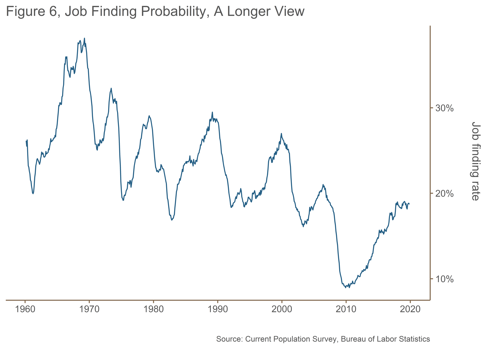
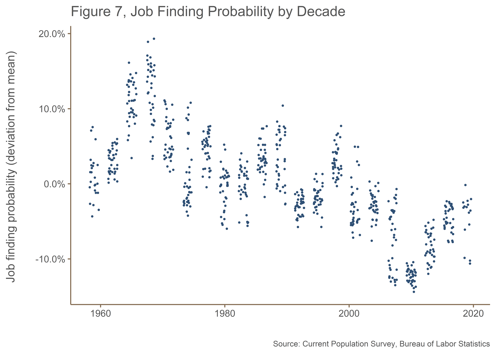
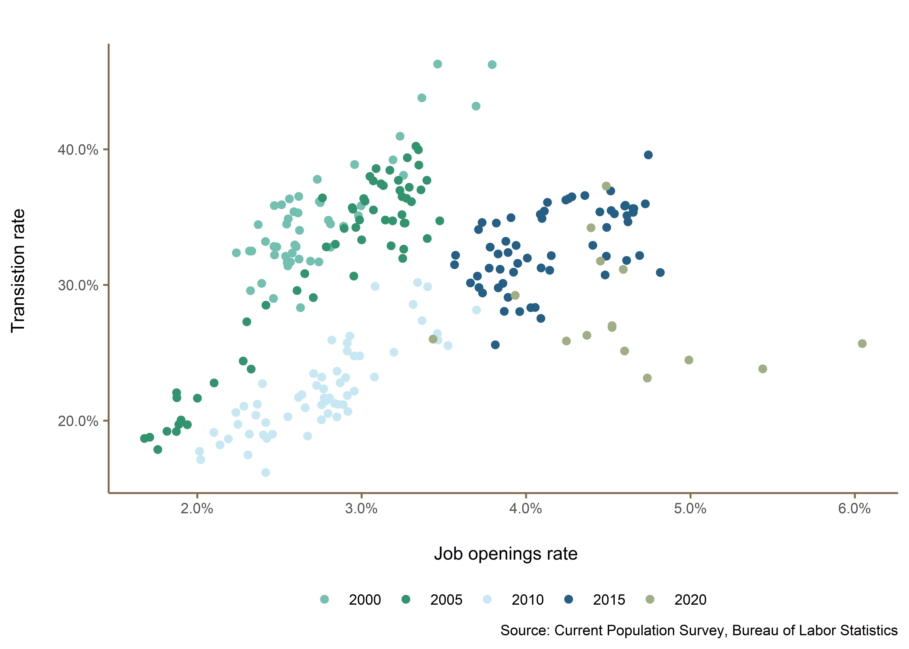

Forecasting is a difficult task to undertake.
How well the labor market is performing is a much more complicated process than simply asking what the current unemployment rate is. While a lower rate of unemployment is surely an important indicator of the strength of the labor market, there are many factors that are of equal importance. But why are labor market conditions so important? Labor market conditions are prominent in the monetary policy deliberations of the Federal Reserve’s Federal Open Market Committee (FOMC). The objectives Congress gave the Fed for monetary policy are “maximum employment, stable prices, and moderate long-term interest rates.” It’s natural then that labor market conditions are an integral part of monetary policy deliberations.
As part of the process of tracking labor market conditions, the Bureau of Labor Statistics (BLS), created the Job Openings and Labor Turnover Survey (JOLTS), which tells us how many job openings there are each month, how many workers were hired, how many quit their job, how many were laid off, and how many experienced other separations (which includes worker deaths). Prior to JOLTS, there was no economic indicator of the unmet demand for labor with which to assess the presence or extent of labor shortages in the United States.
We review some of the theoretical literature and stylized facts regarding the labor market in the United States. This document is by no means a thorough review of all the literature on the subject, but it does aim to present the leading theories and evidence. For those unfamiliar with the concepts in time series methodologies, there is a brief overview of the main methods and guiding principles.
The JOLTS survey design is a stratified random sample of 20,700 nonfarm business and government establishments. The sample is stratified by ownership, region, industry sector, and establishment size class. The establishments are drawn from a universe of over 9.4 million establishments compiled by the Quarterly Census of Employment and Wages (QCEW) program which includes all employers subject to state unemployment insurance laws and federal agencies subject to the Unemployment Compensation for Federal Employees program.
Employment estimates are benchmarked, or ratio adjusted, monthly to the strike-adjusted employment estimates of the Current Employment Statistics (CES) survey. A ratio of CES to JOLTS employment is used to adjust the levels for all other JOLTS data elements.
The JOLTS estimates also are affected by nonsampling error. Nonsampling error can occur for many reasons including: the failure to include a segment of the population; the inability to obtain data from all units in the sample; the inability or unwillingness of respondents to provide data on a timely basis; mistakes made by respondents; errors made in the collection or processing of the data; and errors from the employment benchmark data used in estimation.1
As the United States reels from the COVID-19 pandemic’s catastrophic economic damage, the tight labor markets from early 2020 seem like a distant memory. Before the COVID-19 pandemic, the U.S. labor market had been steadily improving for years: the unemployment rate was falling for nearly a decade to rates not seen since the late 1960s, and witnessed the longest streak of private sector job creation on record. Given these impressive headline statistics, it may come as a surprise that unemployed workers had slightly more trouble finding a job than they did at the peak of the last business cycle (in 2006) and have a much lower probability of finding a job than in 2000.
What makes the COVID-19 recession unique is the nature of the initial shock. While past recessions have been primarily caused by economic or financial shocks, the adverse shock to the labor market in 2020 was triggered by a novel virus that forced millions of employees into temporary unemployment by the second quarter of 2020. The record-level rise in temporary unemployment contrasts starkly with past recessions that typically start with an increase in permanent layoffs .
The path of job vacancies has also been unusual: while vacancies fell throughout the first half of 2020, the drop was much less pronounced than is typical in most recessions. In fact, vacancies at their lowest level were equal to the level that prevailed in 2015, a time typically considered to be a tight labor market. Thus, while the Beveridge curve – the negative relationship between vacancies and unemployment – typically “loops around” during and after a recession, in the early months of the COVID-19 recession, the increase in the unemployment rate was much larger than the corresponding drop in job vacancies.

The difference is that the prior recessions were caused by “demand” shocks; the current recession is fundamentally a “supply” shock. The current recession tore away the facade of the recovery from the Great Recession, exposing the core issues facing the U.S. economy that really had been accumulating over the last three decades: namely increasing inequality and decreasing dynamism in the labor market.

During the late 1990s, roughly 30–35 percent of the unemployed found a job within a month; in 2006 according to estimates by , just prior to the Great Recession, the rate peaked at an annual average of 28.3. Over the course of the recession and for many years afterwards, the probability that an unemployed worker found a job would remain relatively low, with an annual average of 17.0 percent in 2010. Only over the last two years has the probability risen back into the 25–30 percent range, and it stood at 27.7 percent in 2018. These trends are depicted in Figure 3.

Like the vacancy rate, the job-finding rate moves inversely with the unemployment rate, though the correlation is not perfect. As the unemployment rate initially began to decline at the beginning of the recovery from the Great Recession, the job-finding probability did not increase as quickly. The sustained depression in job-finding was a primary factor that prolonged high U.S. unemployment; today, a relatively high job-finding rate helps keep unemployment low.
Prior to the pandemic induced the job-finding rate was still slightly lower than in 2006 despite an unemployment rate nearly a percentage point lower. To better understand how the job-finding rate has changed over time and why it remains somewhat lower than one might expect, we look at how the probability of finding a job changes with length of unemployment.
The decline in the job finding rate implies that the unemployed increasingly spend longer spells of unemployment than previously. Indeed, as Figure 4 shows, the distribution of unemployment duration. Elevated unemployment durations reflect an economy with fewer startups, less job reallocation, and diminished dynamism more generally. Both job-finding and job-losing have declined over time, leaving the unemployment rate roughly at its 2000 level despite a 4.6-percentage-point decline in job-finding. (Elevated unemployment durations may also have other causes, for example the increase in wage inequality, which leads job searchers to hold out for the highest-paid opportunities.)

One of the most direct measures of declining labor market dynamism is the rate of job creation. Job creation combines the employment gains at new and growing establishments. While there has been some cyclical fluctuation, job creation as a share of employment has been on a long downward trend since the early 1990s . We can visualize the outcome of this declining trend in the employment growth rate of Figure 5. Up until the early 1990s, employment growth in the United States rebounded from recessions, but this pattern has since erroded at the close of the 1990s.

At the same time, workers are increasingly less likely to switch jobs. This decline matters for wage growth. First, at least one-third of all hires are made among those already employed, suggesting that job switching is a integral part of how workers’ careers evolve; and second, part of the decline in hiring comes from the decline in job switching. Indeed, more than 40 percent of the decline in hires and separations can be ascribed to declining job-to-job transitions . As workers generally receive a raise when they transition directly from one job to another, declining job switching has put downward pressure on wage growth.
These are not the only statistical measures showing declining flexibility in the U.S. labor market. There have been substantial declines in dynamism—sometimes referred to as labor market fluidity—across a variety of related measures. When job creation, job destruction, job switching, interstate migration, and other indicators of fluidity are combined, find that labor market fluidity has been on a downward trend since at least the 1980s, and has fallen by 10 to 15 percent since the 1990s.



Nonsampling error occurs when a sample is surveyed rather than the entire population. Which means that there is a chance that the sample estimates may differ from the true population values they represent. The difference, or sampling error, varies depending on the particular sample selected. This variability is measured by the standard error of the estimate. BLS analysis is generally conducted at the 90-percent level of confidence. That means that there is a 90-percent chance, or level of confidence, that an estimate based on a sample will differ by no more than 1.6 standard errors from the true population value because of sampling error. Sampling error estimates are available at the BLS’ website↩︎